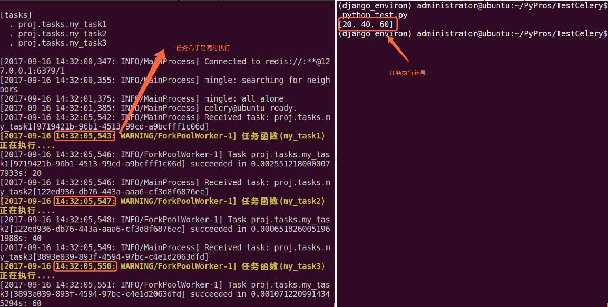
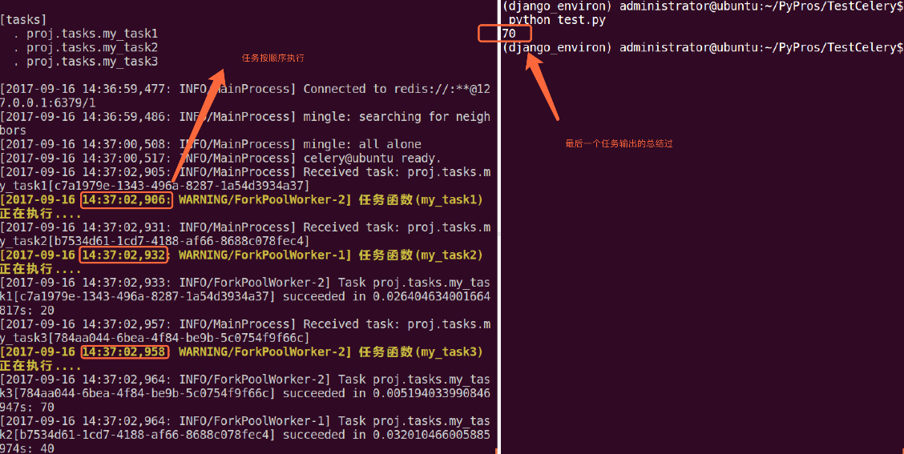

1. signature
我们到目前为止只是学习了如何使用delay()方法，当然这个方法也是非常常用的。但是有时我们并不想简单的将任务发送到队列中，我们想将一个任务函数(由参数和执行选项组成)作为一个参数传递给另外一个函数中，为了实现此目标，Celery使用一种叫做signatures的东西。
一个signature包装了一个参数和执行选项的单个任务调用。我们可将这个signature传递给函数。
我们先看下tasks.py模块中定义的任务函数:
from proj.celery import app as celery_app
# 创建任务函数
@celery_app.task
def my_task1():
print("任务函数(my_task1)正在执行....")
@celery_app.task
def my_task2():
print("任务函数(my_task2)正在执行....")
@celery_app.task
def my_task3():
print("任务函数(my_task3)正在执行....")
我们将my_task1()任务包装称一个signature:
t1 = my_task1.signatures(countdown=10)
t1.delay()
2. Primitives
这些primitives本身就是signature对象，因此它们可以以多种方式组合成复杂的工作流程。primitives如下:
group: 一组任务并行执行，返回一组返回值，并可以按顺序检索返回值。
chain: 任务一个一个执行，一个执行完将执行return结果传递给下一个任务函数.
tasks.py模块如下:
from proj.celery import app as celery_app
# 创建任务函数
@celery_app.task
def my_task1(a, b):
print("任务函数(my_task1)正在执行....")
return a + b
@celery_app.task
def my_task2(a, b):
print("任务函数(my_task2)正在执行....")
return a + b
@celery_app.task
def my_task3(a, b):
print("任务函数(my_task3)正在执行....")
return a + b
group案例如下(test.py模块):
from proj.tasks import my_task1
from proj.tasks import my_task2
from proj.tasks import my_task3
from celery import group
# 将多个signature放入同一组中
my_group = group((my_task1.s(10, 10), my_task2.s(20, 20), my_task3.s(30, 30)))
ret = my_group() # 执行组任务
print(ret.get()) # 输出每个任务结果
 chain案例如下(test.py模块):
from proj.tasks import my_task1
from proj.tasks import my_task2
from proj.tasks import my_task3
from celery import chain
# 将多个signature组成一个任务链
# my_task1的运行结果将会传递给my_task2
# my_task2的运行结果会传递给my_task3
my_chain = chain(my_task1.s(10, 10) | my_task2.s(20) | my_task3.s(30))
ret = my_chain() # 执行任务链
print(ret.get()) # 输出最终结果
